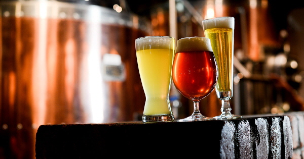
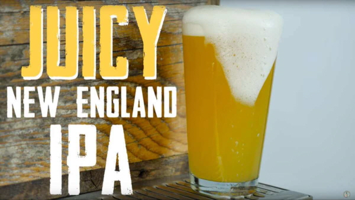

파도맥주는
저희의 핵심가치는 ‘타협 없는 맥주의 품질을 통해 고객에게 맛있는 감동을 선사’하는 것입니다.
가장 신선하고 개성있는 맥주를 만들기 위해, 가장 퀄리티 높은 맥주 재료만을 사용,
최신기술의 맥주 제조 시설을 완비해 최고 품질의 맥주를 만들어내고 있습니다.

우리는
2014년 1월 부산 광안리에 오픈한 최초의 미국식 수제맥주양조장입니다. 열정적인 외국인 홈브루어들이 모여 브루펍으로 작게 시작한 갈매기 브루잉은 2019년 11월 현재 광안본점 외에 해운대, 서면, 남포, 부산대, 경성대 등 부산 주요 지역에 프랜차이즈 가맹점을 두고 있으며, 명실공히 부산을 대표하는 수제맥주로 자리를 잡았습니다. 2019년 5주년을 맞아 양조장을 부산 대저동으로 확장이전한 저희 갈매기팀은, 전국의 더 많은 분들께 좋은 품질의 신나는 수제맥주를 제공하기 위해 끊임없는 노력을 기울이고 있습니다.